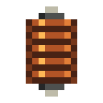
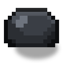
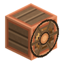
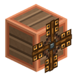
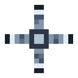
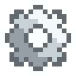

銅ケーブル
alaindustrial:copper_cable
⚠️ 電気安全。 銅の裸ケーブルはプレイヤーに直接接触した時だけでなく、セグメント周囲 0.5 ブロックの範囲でも 2 ダメージを与えます——そのセグメントが通電中である間、すなわちエネルギーが流れているか、またはバッファに電力が残っていて、なおかつネットワークに稼働中の発電機が残っている間です（）。満充電の行き止まりの支線に電流が流れないのは、すでに満杯だからにすぎず、それで安全になるわけではありません。給電の止まった路線は安全です：稼働中の発電機がなければ残った電力は感電させないので、開いたケーブルブレーカーは今でもその先の区間から危険を完全に取り除きます。通常の防具はダメージを減らします。水はダメージを増幅しません。ケーブルとプレイヤーの間の固体ブロックが衝撃を遮ります。この仕組みはサーバー設定で無効化できます。衝撃の確率を完全に排除せず下げるには絶縁台（）を使うか、完全に安全な絶縁銅ケーブルに裸線を取り替えてください。 線路に手を触れずにダメージを完全に消すこともできます。絶縁一式——スライムに浸した革防具です。装備一点ごとに感電の四分の一を削り、完全な一式なら何も通さず、その分だけ耐久を消費します。
概要
銅ケーブルはゲーム序盤の主力ケーブルで、初期チェーン——ソーラーパネル → 貯蔵库 → 鉱石粉砕機——の導線です。隣接するブロックを一本のラインに繋ぎ、LV エネルギー（最大 32 EU/FE/ティック）を伝えます。長い路線では途中でエネルギーが失われ——線が長く流れが大きいほど損失が増えます。減衰は指数関数的で、任意の長さの線も正のパケットから最低 1 EU/FE を残すため、受電側のバッファは常に正確に満たされます。クラフトが安価なので、上位ティアのケーブルを解放する前に拠点を配線するのに便利です。
エネルギー
ケーブルは LV エネルギーを運び、隣接するブロックに接続します。電源から消費者までの各導線でわずかな EU/FE が失われます——正確な式は表を参照してください。
| 項目 | 値 |
|---|---|
| 役割 | 伝送 |
| 最大電圧 | 32（LV） |
| セグメント稼働バッファ | ケーブル 1 本につき 12 EU/FE |
| 損失 | ブロックあたり 0.02 減衰。N > 0 の場合、消費者あたり max(1, ceil(N × 0.98^距離)) EU/FE/ティックが届く。距離 = 最寄りの電源からのケーブル数 |
| 絶縁 | 安全な隣接のために絶縁可能 |
| 台 | 裸セグメントの下に板材・羊毛・ガラス——衝撃確率を下げるが排除はしない |
慣性を持つ流れ（）。 ケーブルは「テレポーター」ではありません：各ブロックには小さな生きたバッファ（12 EU/FE）があります。すべてのエネルギー（機械へも貯蔵库へも）が、ティックあたり 1 回のネットワーク巡回でセグメント間（ケーブル→ケーブル）を流れるため、稼働中のどのケーブルも実際に通過するエネルギーを保持・表示し、遠くの消費者へはライン充填の慣性とともに届き、路線が切れた場合は残りは電源に近い側のケーブルバッファに保持されます。バッファは意図的に極小です：1000 本のケーブルからなるネットワークでも 12 × 1000 = 12 000 EU/FE を保持します——エネルギー貯蔵庫（20 000 EU/FE）1 個より少なく、したがって「導線で電池を組み上げる」ことはできません。スループット = バッファサイズ：消費者に隣接するケーブルあたり 12 EU/FE/t（ティア電圧 32 EU/FE は電源からの引き込み上限であり、細い線のスループットではありません）。消費者がいなくても電源は導線を容量まで満たし（バッファはすぐに見えます）、その後ネットワークはスリープします。はしごの他の品種（スズ/金/エレクトラム）のバッファと損失も同じ仕組みで、それぞれ専用のコンフィグキーを持ちます（、）。
ケーブルは過負荷で爆発しません：上限を超えた分は通過しません。本格的な MV/HV/EV の流れには対応するティアのケーブルが必要です。
ブロックの性質
隣接するブロックに接続する細い導線です。任意の道具で壊せますが、ケーブルブレーカーだと更に便利です。
| 項目 | 値 |
|---|---|
| 形状 | 細い棒（6px コア + スリーブ） |
| 硬さ | 0.2 |
| ツール | 任意 / ケーブルブレーカー |
ハーフブロックへの接続
ケーブルは隣接するハーフブロック（例えばソーラーパネル）の上面にきちんと乗ります：隣接ブロックが低い場合、導線は宙に浮かず、低い側に合わせて下がります。これは将来の低いブロックすべてに例外なく自動的に働きます。
ケーブルブレーカー（Cable Breaker）
配線を引き抜くことなく保守のために路線を通電解除する挟み込み式スイッチです。ブレーカーアイテムで敷設済みの任意のケーブルを右クリックすると装着でき、導線の上に小さな筐体として表示されます。GUI はなく 3 つの操作だけです：素手での右クリックでスイッチを切り替え、スニーク + 右クリックで引き抜くとアイテムが戻ってきます。
状態は導線から直接読み取ります——緑のバンドは路線が通電中、赤のバンドは不通を意味します。筐体は路線に通された一本の首輪ですが、あるセルの配線が複数の軸に沿って伸びる場合（角、T 字、六方向の星形）、そのセルには首輪が載る単一軸がないため、立方体になります。スイッチが開いていると筐体から 2 本の短い切り株が突き出します——切断された端で、この隙間はブロックが欠けているのではなく、意図的な切断として読めます。クリック音はオンで高く、オフで低く鳴り、スイッチを見ていなくても位置が聞き取れます。
開いたブレーカーは自分のセグメントをグリッドから完全に外します：ケーブルが掘られた場合と全く同様にネットワークが 2 つに分かれ、下流のすべてが通電を失います。ブレーカーより先の裸線は 1 ティック以内に衝撃を止めます——これがスイッチの存在意義です。閉じると、新しく敷いたケーブルがグリッドに加わるのと同じ方法でセグメントを戻します。
新しく装着したブレーカーは閉じているため、取り付けで拠点を不意に停電させることはなく、取り外し時にはレバーの位置に関わらず必ず路線を復旧します。ケーブルを壊すと、そのブレーカー（および台座）は削除されずアイテムとしてドロップします。
手動専用——ブレーカーはレッドストーンを読み取りません。切り替えるとグリッドの一部を再構築し、レッドストーンクロックはそれを毎秒何度も実行してしまうため、自動化は将来の別課題です。
レシピ
クラフトテーブルで純銅から作られ、序盤で最も手に入りやすい導線です。
クラフト：銅インゴット 3 個を横一列 → ケーブル 3 個。 加工レシピ：なし。
関連項目
エレクトラムケーブル——階段で最も損失の少ない HV 幹線。
クラフト
定型クラフト
▶
銅ケーブル
用途
定型クラフト
▶
電池
定型クラフト
▶
エネルギー貯蔵庫
定型クラフト
▶
充電ステーション
定型クラフト
▶

銅コイル
定型クラフト

▶
絶縁銅ケーブル
定型クラフト
▶
銅の導体チップ
定型クラフト
▶
避雷針発電機
定型クラフト
▶
原子炉出力端子
定型クラフト
▶
ソーラーパネル
定型クラフト
▶
真空カプセル
定型クラフト
▶

水車
定型クラフト
▶

風力タービン
定型クラフト
▶
風力タービンのローター
定型クラフト


▶
高度なローター